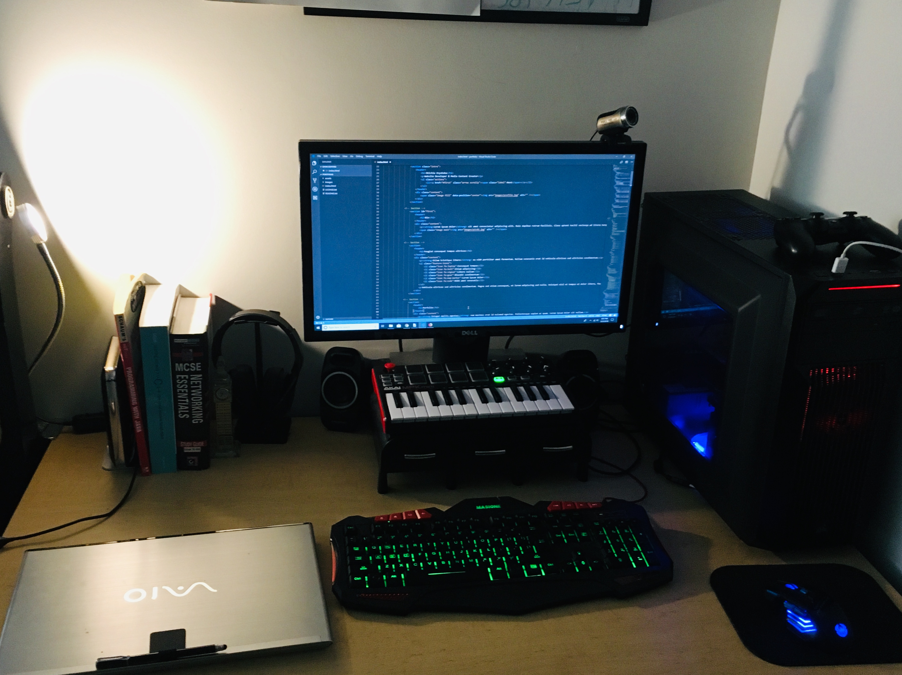
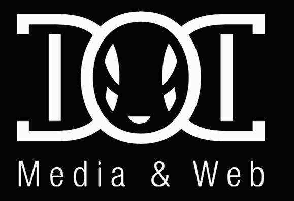
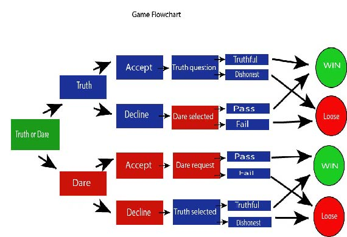
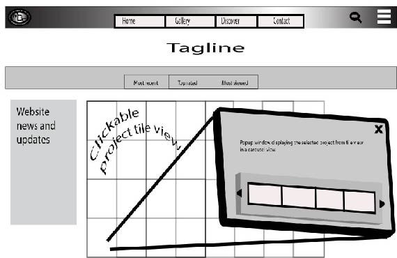
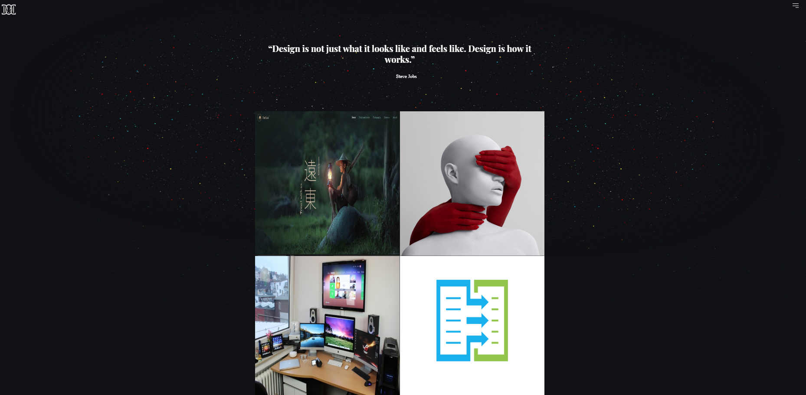

Obichia (Ben) Onyekaba
Website Developer & Media Content Creator
Bio
I am an American Born and Nigerian made System Analyst by day and a digital content fanatic by night. At a very young age I developed an admiration for the arts and digital media in all methods of delivery. From a handmade flipbook to a mega box office motion picture, my enthusiasm precedes me. I have held multiple titles in different industries which has immensely refined my work ethic. My diverse experience in the workforce makes me inherently understand that the client is the single most valuable asset an organization can have. As i further my professional career, it becomes much clearer that Web Development and other methods of digital media is my true calling. I am a contributor.
PC build by yours truly...
Home workstation
Areas of Interest
Technological Interests
Porfolio
Current Project I am currently developing a website to serve as a platform to showcase Digital Media and Web Content created by freelancers. The site will include other features as well. Feel free to browse the website. Feedback is always welcome. Double-O-Digital is currently a work in progress so you might come across a few broken links.
Double-O-Digital
A fully fledged digital agency.
Digital Media & Web products:
Website and mobile applications
Digital Publishing
eCommerce
Animation
Photography
Video Production
Audio Sequence
Musical Composition
Virtual reality
Interactive Storytelling
Instructional videos
Graphic Design
Data Visualization
Games (console, online and learning)
{kind=link}
{kind=link}
The Double-O-Digital graphic was created as a personal graphic in 2016. It was done using Adobe Photoshop. I was inspired by the DC clothing brad logo while making this. It is well balanced and the letters are easily identifiable. This Game Flowchart was created using the object transform tool in Adobe Illustrator. It illustrates the flow of a game of truth or dare based on selections made by the player..
{kind=link}
{kind=link}
Web Design
Webpage mockup (2018)
This project was created for the course CMST 495 (Current Trends in Digital Media and Web Technology) using Adobe Illustrator. The task was to create a single web page mock-up. Gradient, symbolisim and mesh tools were used. 3D effects were also applied. Opacity masks{kind=link}

{kind=link}
Videography
Video Edit
Enhanced using Adobe Photoshop & Adobe Premiere
This project was the final project for a TVRA 100 course which i completed at UMUC. I had alot of fun whil woeking on this project. Incorporating graphics, videos clips and special effects was very exciting. Keyframing was challenging to me. This possibly occured because of my obsession with precision, considering the timing has to be exact
Resume
Technologies
languages:
HTML5, CSS3, C#, Drupal, JavaScript, JQuery, Git, COLDFUSION, PHP & SQL
Tools
Visual Studio, SQL Developer, SQL Server, Oracle, MySQL Workbench, Virtual Box, Issue View, ID Protect Client, Remote Desktop, TightVNC, LogMeIn Rescue, Adobe: Photoshop, Dreamweaver, Premiere, Media Encoder, Facebook Insights, Google Analytics and MS Office: Word, Excel, PowerPoint, Access, and Outlook
Education
Montgomery College, Rockville MD
Jan 2013 – June 2016
AAS in Digital Media and Web Technology
University of Maryland University College
Jun 2018 – 2019
BA in Digital Media and Web Technology
Employment
Westat, Rockville, MD
System Analyst
Sept 2015 to present
- Main IT support for Windows Application and multiple Drupal websites.
- upport includes: User accounts management, file management, content updates, and configuration
- Utilize Issue Tracking software when identifying and documenting software, hardware, and Drupal, .NET websites related errors, and flaws
- Use strong technical/communication skills to provide Tier 1 & 2 Help Desk support to Principal Investigators, Researchers, Study Centers and Field Interviewers
- Provide remote and in person server, workstations and network maintenance support for study centers throughout the United States
- Reconcile bio-specimen issues within the bio-repository database, such as duplicate/invalid samples or falsified specimen collection
- Perform customization, patch deployment and upgrades of study project software and hardware equipment for use by Study Centers and Field Interviewers
The Great British Pine Mine, Kensington, MD
IT Administrator
May 2015 to March 2017
- Provide a content strategy and website updates for their main website on a Drupal platform -pinemine.com
- Provide marketing consultation services to the owner of a family owned and operated furniture store
- Manage the setup of new data storage system for all the multimedia files associated with the company, to ensure long-term accessibility and ease of use
- Capture high quality pictures of products and promoted them on website and social media
- Troubleshoot and resolve issues with online accounts and product listing
North Capitol Partners, South East, Washington DC
INC. Computer Technician
Mar 2015 to Nov 2015
- Supported NCP by providing IT support including hardware and software installation and testing for the FCC
- Built computer hardware systems and installed necessary software
- Backup applications, documents, and other various computer software
- Tested new operating systems and various software and hardware
- Performed virus/spyware removal